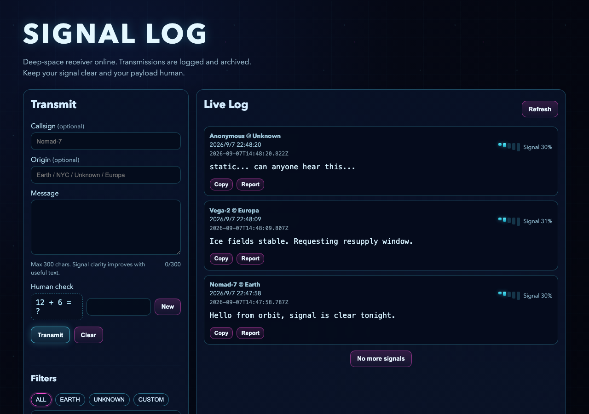

00
这是什么项目
先别急着看代码。开机之前，你得知道自己打开的是个什么机器。
它是什么
这是一个叫 SIGNAL LOG 的深空主题留言板。访客写一段“传讯”（transmission），填个呼号（callsign）和来源星球，点一下发射，这条留言就出现在一份实时滚动的“日志”里，谁都能看到。
剥掉深空这层皮，它其实属于最常见的一类项目——增删改查类项目：你写一条、能看见、能改、能删。
你一定用过同类的东西：微博评论区，你发一条，底下所有人都能刷到；小区群里接龙报名，一人一行，谁填的一目了然。SIGNAL LOG 就是把这套逻辑，套上了一层“深空电台”的皮肤。
先玩一玩
这个项目不是一堆静态网页——它背后跑着一个真正的服务器（Express）和一个真正的数据库（SQLite），所以没法直接把它嵌进这门课里点着玩。下面这张图，是它在本机真实跑起来之后截的：

想亲手玩，自己在终端里跑起来：先 npm install，把 .env.example 复制成 .env 填上一个 ADMIN_TOKEN，再 npm run dev，浏览器打开 http://localhost:3000。
为什么不能直接嵌进网页
项目 README 里写得很直白：GitHub Pages 这类只会托管纯网页文件，没法运行 Express 服务器和 SQLite 数据库，所以这类“动态网站”必须找一台真正能跑程序的服务器（比如 Render）才能上线。凡是需要“记住”数据的项目，基本都逃不开这道坎。
看代码之前的十个词
下面十个英文词，是这份代码里出现最密集、也最容易卡住人的。每个词后面配的两三行代码，都能在真实文件里原样找到——先认脸，后面读代码才不会觉得每一行都是陌生人。
async 出现在几乎每一个要“等一等”的函数前面，比如提交留言这个动作：
public/app.js:186-188
async function submitTransmission(event) {
event.preventDefault();
const form = event.currentTarget;
async 写在 function 前面，说明这个函数里允许“等”。
先把浏览器默认的“表单一提交就刷新页面”拦下来。
拿到这次触发提交的那个表单元素本身。
await 总是和 async 一起出现，它标记“这一步要等结果”：
public/app.js:207-211
try {
await apiFetch('/api/messages', {
method: 'POST',
body: JSON.stringify(payload)
});
try 包住可能失败的操作，失败了不会让整个页面崩掉。
await 让程序在这里等，直到服务器给出答复才继续往下走。
告诉服务器这是一次“新建”动作。
把这条留言打包成 JSON 文本装进请求里。
fetch 就是那个真正负责“去把结果取回来”的函数：
public/app.js:123-125
async function apiFetch(url, options = {}) {
const res = await fetch(url, {
headers: {
这个项目把 fetch 包了一层，统一起名叫 apiFetch。
真正发请求的还是浏览器内置的 fetch，等它的结果存进 res。
给这次请求配上统一的请求头。
JSON 是前后端说话时共用的“格式”：
server.js:30-30
app.use(express.json({ limit: '16kb' }));
这一行让服务器学会看懂 JSON 格式的请求，并且限制最大 16kb，防止有人塞一个超大包过来。
route（路由） 决定了一个请求该被谁接住：
server.js:148-148
app.get('/api/messages', (req, res) => {
这条路由声明：凡是 GET 方式访问 /api/messages 的请求，都归后面这段函数处理。
middleware（中间件） 是请求真正被处理之前先经过的关卡：
server.js:158-159
app.post('/api/messages', enforcePostRateLimit, (req, res) => {
const payload = req.body || {};
路由和真正处理它的函数之间，插了一个 enforcePostRateLimit——这就是一道中间件，先查发信频率，没超才放行。
放行之后，才轮到这一句取出这次提交的内容。
token（令牌） 是一张“我验证过了”的临时凭证：
server.js:136-138
const token = req.headers['x-admin-token'];
if (!token || token !== ADMIN_TOKEN) {
return jsonError(res, 401, 'Unauthorized admin token.');
从请求头里取出这次带来的令牌。
没带、或者和服务器里存的不一致，都算没通过。
401 表示“你没有权限”，这里明确写清了原因。
query string（查询参数） 就是网址问号后面那一串：
server.js:149-150
const limit = Math.max(1, Math.min(50, Number.parseInt(req.query.limit, 10) || 50)); const offset = Math.max(0, Number.parseInt(req.query.offset, 10) || 0);
从网址的查询参数里读 limit（这次要几条），没写就用默认值 50，还封了个上限，防止有人一次要一万条。
同样的方式读 offset（从第几条开始），用来实现“加载更多”。
textContent 是这个项目防止留言内容“搞事情”的关键一招：
public/app.js:100-103
blocks.forEach((entry, idx) => {
const textEl = entry.querySelector('.message-text');
textEl.textContent = state.items[idx].message;
});
拿到页面上每一条留言对应的空白位置。
找到专门留给正文的那个空标签。
用 textContent 把留言塞进去，而不是拼 HTML——这样哪怕留言里写了代码，也只会被当成一段普通文字显示，不会被浏览器执行。
transaction（事务） 保证一次操作不会“做一半就停”：
db.js:102-105
export function createMessage({ createdAt, callsign, origin, message }) {
const tx = db.transaction(() => {
const insert = insertMessageStmt.run({
created_at: createdAt,
这是新建一条留言时，数据库这一层真正被调用的函数。
db.transaction 把接下来几步包成一个事务——要做就一起做完。
先把这条留言本身插进 messages 表。
记下它的创建时间。
SIGNAL LOG 被归为“增删改查”类项目，这四个字具体对应它的哪些动作？
为什么这门课不能直接把 SIGNAL LOG 嵌进一个 iframe 让你玩？
代码里的 await 关键字，最贴切的作用是什么？
你朋友问你“这个 SIGNAL LOG 到底是个啥网站”，用不超过三句大白话讲给他听——别用“CRUD”“transmission”这些术语。
- 说清楚了这是一个“留言板”或类似性质的东西，别人写了留言你能看到
- 提到了它有个“深空电台”或者“星际通讯”这样的主题外壳
- 没有用 CRUD、transmission、endpoint 这类术语，全是你自己的大白话
- 让朋友听完能明白它和微博评论区、群接龙这类东西是一回事
01
拆架构
先别碰代码。一间电台有好几个舱室，先搞清楚哪个舱室管哪摊事，走进任何一间才不会迷路。
这份代码分几块
SIGNAL LOG 只有五个真正干活的文件，分布在三个“舱室”里：浏览器里跑的、服务器上跑的、数据库里存的。点开下面每个方块，看它具体负责什么。
浏览器
服务器
数据库
点任意一个方块，看它负责什么
关注点分离
三个舱室各管一段，谁都不越界：app.js 只管画和收，server.js 只管分诊和检查，db.js 独占硬盘读写权。工程上把这个原则叫“关注点分离”——出问题时你只需要问一句“这属于哪一段”，就知道该去哪个文件找，不用把五个文件都翻一遍。
五个文件，各管一摊
把地图收起来，换一张更直白的清单——这五个文件，就是这个项目的全部家当：
public/index.html
页面骨架：表单长什么样、日志区域在哪，都写死在这里。
public/styles.css
管长相：深空导航、霓虹配色、信号条动画，全在这一份文件里。
public/app.js
管交互：提交表单、发请求、把结果画出来，全部由它接线。
server.js
管把关：路由分诊、限流、人机验证、管理员令牌校验都在这。
db.js
管落地：唯一一个真正往 SQLite 数据库文件里读写的地方。
一次请求，怎么在三个舱室之间传
不管你在页面上点的是发送、搜索还是删除，走的都是同一条固定路线——浏览器发起，服务器把关，数据库落地，再原路把结果传回来：
这条路线来回都要走完整——服务器不会自己把新留言“推”到你的页面上，永远是浏览器主动问一遍，问完才知道有什么新东西。这也是为什么点了“发送”之后，app.js 还要再问一次服务器“现在都有哪些留言”，而不是自己把你刚打的字直接画上去。
如果有人反馈“我提交的留言，信号强度数字看起来不对”，你先打开哪个文件查？
要新增一条“举报理由不能超过 160 字”的检查，这类检查通常写在哪一层？
你在另一台手机上发了一条留言，为什么电脑这边的页面不会自动跳出来？
用你自己的话说一遍：SIGNAL LOG 这份代码分成几块，各自负责什么，一次点击是怎么在它们之间传的？
- 说出了 app.js 只管浏览器里的画面和请求发送，不碰硬盘
- 说出了 server.js 是把关的那一层：路由分诊、限流、人机验证都在这
- 说清楚了只有 db.js 真正往数据库里读写
- 提到了浏览器要“主动重新问一遍”才能看到最新数据，不是被动推送的
02
发一条信号
你在表单里打了一句话，点了“Transmit”。这一下，走了多远才真正变成日志里的一行？
跟着这条信号走一遍
假设你填了呼号 Nomad-7，来源 Earth，写下“Hello from orbit”，答对了人机验证的算术题，点了发射键。这一下要经过四道关卡，才会真正出现在日志里——点“下一步”，自己走一遍：
点“下一步”，跟着这条信号走一遍。
出发前，app.js 先自己看一眼
点了发射按钮，app.js 先把表单里的几项拼成一个包裹，其中有一项你看不见——它专门用来钓机器人：
public/app.js:192-199
const payload = {
callsign: form.callsign.value,
origin: form.origin.value,
message: form.message.value,
humanAnswer: form.humanAnswer.value,
humanToken: state.humanToken,
website: form.website.value
};
把这次要发的东西打包成一个对象，准备交给 apiFetch。
呼号、来源、正文，都是从表单里原样取出来的。
humanAnswer 是你填的算术答案，humanToken 是这道题的编号，两个要对得上才算数。
website 就是那个蜜罐字段，页面上不显示，真人永远填不了它。
包裹打好之后，app.js 还会自己先检查一遍留言是不是空的：
public/app.js:201-205
const validationError = validateMessageClient(payload.message);
if (validationError) {
formError.textContent = validationError;
return;
}
调一个专门检查留言内容的函数，不通过就会返回一句错误提示。
有错误就走这条分支。
把错误信息显示在表单下面。
直接 return，请求根本不会被发出去——省下一趟没必要的网络请求。
前端校验拦不住存心捣乱的人
app.js 这里的检查只是为了让普通用户少踩坑、少发无效请求，不是真正的安全防线。任何人都能跳过页面，直接拿命令行工具往 /api/messages 发请求，把这些检查全部绕过去。真正拦得住的检查必须写在服务器那一层——这是所有前后端分离项目都成立的规矩。
服务器的第一道关卡：别发太快
请求到达 server.js 之后，还没轮到真正处理它的函数，先要过一道中间件——专门检查你发得是不是太频繁：
server.js:81-92
function enforcePostRateLimit(req, res, next) {
const ip = getClientIp(req);
const now = Date.now();
const entry = postRateByIp.get(ip) || { recent: [], lastPostAt: 0 };
entry.recent = entry.recent.filter((ts) => now - ts <= rateWindowMs);
if (entry.lastPostAt && now - entry.lastPostAt < minGapMs) {
return jsonError(res, 429, 'Rate limit: wait at least 10 seconds between transmissions.');
}
if (entry.recent.length >= maxPostsPerWindow) {
return jsonError(res, 429, 'Rate limit: maximum 10 transmissions per hour.');
}
这个中间件按谁发的请求（IP 地址）分别记账。
先把一小时之前的旧记录清掉，只留最近一小时内的。
离上一条不满 10 秒，直接拒绝，返回 429 状态码。
一小时内已经发了 10 条，同样拒绝。
过了这一关，才轮到真正读取你发的内容的那个函数——路由声明里能看到这道关卡被插在了路由和处理函数之间：
server.js:158-166
app.post('/api/messages', enforcePostRateLimit, (req, res) => {
const payload = req.body || {};
const callsign = normalizeText(payload.callsign, 24);
const origin = normalizeText(payload.origin, 32);
const message = normalizeText(payload.message, 300);
const humanAnswer = normalizeText(payload.humanAnswer, 16);
const humanToken = normalizeText(payload.humanToken, 64);
const website = normalizeText(payload.website, 128);
enforcePostRateLimit 就写在路由和处理函数中间——没通过就根本不会走到下面这些行。
取出这次请求带来的原始内容。
每一项都过一遍 normalizeText——去掉多余空格、按各自的长度上限截断，防止有人塞一段超长文字。
服务器再检查一遍内容，谁都不信
就算前端已经查过一遍，server.js 还是会把同样的检查再做一次——这次是真正生效的那一次：
server.js:171-179
if (!message) {
return jsonError(res, 400, 'Message is required.');
}
if (!hasMeaningfulContent(message)) {
return jsonError(res, 400, 'Message must include at least one letter or number.');
}
if (isRepeatedSpam(message)) {
return jsonError(res, 400, 'Message looks like repeated-character spam.');
}
留言是空的，直接拒绝。
留言里一个字母或数字都没有（比如全是标点符号），也拒绝。
同一个字符连续出现超过 7 次，判定为刷屏，拒绝。
接着是人机验证这一步——你填的算术答案，要和之前领到的那道题对得上号：
server.js:180-191
if (!humanToken || !humanAnswer) {
return jsonError(res, 400, 'Human check is required.');
}
const challenge = humanChecks.get(humanToken);
if (!challenge || challenge.expiresAt < Date.now()) {
humanChecks.delete(humanToken);
return jsonError(res, 400, 'Human check expired. Request a new challenge.');
}
if (challenge.answer !== humanAnswer) {
return jsonError(res, 400, 'Human check answer is incorrect.');
}
两样都得有，缺一样就拒绝。
拿着 humanToken 去服务器内存里查这道题当时的正确答案。
题目已经超过 5 分钟没人查，判定过期，清掉记录，让你重新领一道题。
答案对不上，拒绝。
一道题只能用一次
验证通过之后，这道题会立刻从服务器内存里删掉——不管对错，用过就作废。这样即使有人截获了你答对的请求，想原样重发一次刷屏，也会因为这道题已经不存在而失败。
全部通过，落地进数据库
所有检查都过了，server.js 才会真正把这条留言交给 db.js：
server.js:195-203
const created = createMessage({
createdAt: nowIso(),
callsign: callsign || null,
origin: origin || null,
message
});
return res.status(201).json(created);
});
调用 db.js 里唯一负责新建留言的函数。
呼号或来源如果是空字符串，就存成 null，不存空字符串。
201 表示“新建成功”，把刚存进去的这条记录原样传回浏览器。
db.js 这边，新建留言和算信号强度绑在同一个事务里：
db.js:102-113
export function createMessage({ createdAt, callsign, origin, message }) {
const tx = db.transaction(() => {
const insert = insertMessageStmt.run({
created_at: createdAt,
callsign,
origin,
message,
strength: 0
});
const id = insert.lastInsertRowid;
const strength = computeStrength(message, id);
updateMessageStrengthStmt.run(strength, id);
先把留言插进 messages 表，信号强度暂时填 0——占个位置。
拿到数据库刚分配给这条留言的 id。
有了 id 才能算出真正的强度分数，再回头把 0 更新成这个数。
插入和更新绑在同一个事务里，不会出现“存了留言但强度没算完”的中间状态。
信号强度不是随便给的，长留言基础分更高，再加一点由留言 id 算出来的“噪声”，让每条信号看起来都不太一样：
db.js:95-100
function computeStrength(message, id) {
const len = message.length;
const base = Math.min(85, 20 + Math.floor((len / 300) * 65));
const noise = hashInt(id) % 16;
return Math.max(0, Math.min(100, base + noise));
}
留言越长，基础分越高，但封顶 85，不会让长文一家独大。
拿这条留言的 id 算出一个 0 到 15 之间的“噪声”，加进基础分。
最终结果卡在 0 到 100 之间，这就是你在信号条上看到的那个百分比。
找茬：这份前端检查被人悄悄改坏了
下面这段 validateMessageClient 是从 app.js 里改出来的，被人动了一处手脚——点出你觉得有问题的那一行：
这段代码被人悄悄改坏了，点一下你觉得有问题的那一行。
好在这条检查前端漏了，服务器那边的 hasMeaningfulContent 还是会把纯空格的留言挡下来——这正是“服务器再检查一遍，谁都不信”这条规矩的意义。
如果只在 app.js 里检查留言不能是空的，服务器完全不重复检查，会有什么风险？
同一个人 1 小时内已经成功发了 10 条留言，这时候第 11 次点发射会怎样？
用同一个 humanToken 把同一次请求原封不动重发一遍，能再成功一次吗？
用你自己的话说一遍：从你点“Transmit”，到这条留言出现在日志顶端，中间依次经过了哪些检查？
- 提到了 app.js 里 validateMessageClient 这一步只是体验优化，不是真正的防线
- 说出了 enforcePostRateLimit 这道限流中间件，以及它检查的两条线
- 提到了人机验证的 humanToken 用过一次就作废
- 说清楚了只有 db.js 里的事务真正把留言写进数据库，还顺手算了信号强度
03
搜索这片电波
日志里已经攒了几百条留言，你想只看三天前提到“resupply”的那条，或者只看来源不明的信号——怎么找？
一次搜索，四个角色怎么对话
你在搜索框里打了 resupply，又把过滤器切到 UNKNOWN。这一下，app.js、server.js、db.js 之间发生了一段对话：
别一敲字就发请求
输入框每敲一个字都触发一次事件，但没人希望你打“resupply”这八个字母时发出八次请求。app.js 用了一个专门“憋一会儿再动手”的技巧：
public/app.js:37-43
function debounce(fn, wait) {
let timer;
return (...args) => {
clearTimeout(timer);
timer = setTimeout(() => fn(...args), wait);
};
}
这个函数接收“真正要做的事”（fn）和“要等多久”（wait），返回一个新的、会自己憋一会儿的函数。
用一个变量记着上一次定的“稍后执行”的计划。
每次被调用，先把上一次还没到点的计划取消掉。
重新定一个新计划：等满 wait 毫秒，如果这期间没有再被打断，才真正执行 fn。
这个技巧叫防抖，搜索框正是这么用它的：
public/app.js:318-324
function setupSearch() {
if (!dom.search) return;
dom.search.addEventListener('input', debounce(() => {
state.query = dom.search.value.trim();
loadMessages({ reset: true });
}, 300));
}
页面上没有搜索框就直接退出，不往下走。
给搜索框挂上一个“内容变化”的监听器，但传进去的不是原始函数，是 debounce 包过的版本。
真正执行时，把输入框里的文字记下来。
重新拉取一遍留言列表，并且从第一页开始。
300 毫秒——这就是你打字时感觉不到延迟、但又不会疯狂发请求的那个平衡点。
拼好网址，问一次服务器
不管是搜索、切换过滤器，还是点“加载更多”，最终都会走到同一个函数——它负责把当前状态拼成一个网址，发出去：
public/app.js:138-148
async function loadMessages({ reset = false } = {}) {
if (state.loading) return;
state.loading = true;
if (reset) state.offset = 0;
const qs = new URLSearchParams({
limit: String(state.limit),
offset: String(state.offset),
q: state.query,
origin: originFilterValue()
});
reset 为 true 表示“这是一次全新的查询”，比如换了搜索词或过滤器。
已经在加载中就不重复发起，防止手抖多点几下发出一堆重复请求。
全新查询要把 offset 归零，从第一页开始看。
把 limit、offset、搜索词、过滤条件，拼成网址问号后面那一截查询参数。
请求真正发出去、等结果、再把结果画到页面上——是同一个函数剩下的部分：
public/app.js:150-161
try {
const data = await apiFetch(`/api/messages?${qs.toString()}`);
state.total = data.total;
state.items = reset ? data.items : state.items.concat(data.items);
state.offset = state.items.length;
renderItems(PAGE === 'admin');
} catch (err) {
showToast(err.message, 'error');
} finally {
state.loading = false;
renderItems(PAGE === 'admin');
}
拿着拼好的网址真正发请求，等服务器给出结果。
记下符合条件的总共有多少条。
全新查询就直接替换列表；“加载更多”则是接在已有列表后面拼起来。
offset 更新成当前页面上已经有多少条——这就是“加载更多”知道下次该从哪条继续要的依据。
不管成功还是失败，最后都要把“正在加载”状态解开，让按钮重新可点。
网址真正到达服务器时，走的还是那条普通的路由——只是这次多读了几个查询参数：
server.js:148-156
app.get('/api/messages', (req, res) => {
const limit = Math.max(1, Math.min(50, Number.parseInt(req.query.limit, 10) || 50));
const offset = Math.max(0, Number.parseInt(req.query.offset, 10) || 0);
const query = normalizeText(req.query.q, 100);
const origin = normalizeText(req.query.origin, 64);
const result = listMessages({ limit, offset, query, origin });
return res.json(result);
});
limit 卡在 1 到 50 之间——就算你手动改网址传 9999，也只会给你 50 条。
offset 不能是负数。
搜索词和过滤条件也过一遍长度限制，不信任任何前端传来的东西。
真正的查询工作交给 db.js 的 listMessages，查完直接把结果原样传回浏览器。
db.js 怎么拼出这条 SQL
listMessages 收到条件之后，要先判断这次查询到底带了哪些筛选，其中“来源未知”是个特殊情况——它不是在找一个叫 __unknown__ 的星球：
db.js:120-130
export function listMessages({ limit, offset, query, origin }) {
const unknownOriginOnly = origin === '__unknown__';
const hasQuery = Boolean(query);
const hasOrigin = Boolean(origin) && !unknownOriginOnly;
const params = {
limit,
offset
};
if (hasQuery) params.q = `%${query}%`;
if (hasOrigin) params.origin = `%${origin.toLowerCase()}%`;
app.js 那边把“来源未知”这个过滤器编码成了一个固定的暗号：__unknown__。
有没有搜索词、有没有自定义来源，分别记一下，等会儿要用来决定 SQL 拼不拼这部分条件。
搜索词前后各加一个 %，意思是“只要这段文字出现在留言里任何位置就算命中”。
真正拼 SQL 语句的是另一个函数——按有没有搜索词、有没有来源过滤，一段一段往上加条件：
db.js:69-80
const listMessagesStmtFactory = ({ hasQuery, hasOrigin, unknownOriginOnly }) => {
let sql = `
SELECT id, created_at, callsign, origin, message, strength
FROM messages
WHERE 1=1
`;
if (hasQuery) sql += ` AND message LIKE @q`;
if (unknownOriginOnly) {
sql += ` AND (origin IS NULL OR TRIM(origin) = '' OR LOWER(origin) LIKE '%unknown%')`;
} else if (hasOrigin) {
sql += ` AND LOWER(COALESCE(origin, '')) LIKE @origin`;
}
WHERE 1=1 这句本身恒成立，是个小技巧——后面不管加几个 AND 条件，都不用操心第一个条件前面要不要写 WHERE。
有搜索词，就加一条“留言内容里包含这段文字”。
“来源未知”要满足三种情况之一：来源本来就是空的、只有空白字符、或者写着 unknown 这个词——不是去精确匹配某个固定值。
普通的来源过滤，就是简单的“包含”匹配，并且不区分大小写。
按需拼条件，而不是查完再筛
这里的做法是“你给了什么条件，SQL 就加什么条件”，而不是把全部留言都取出来，再用 JavaScript 一条条挑。数据库自己筛选比程序拿到手之后再筛快得多，留言数量越大，这个差距越明显——这也是为什么“能让数据库做的事，尽量别自己做一遍”是个通用原则。
“加载更多”是怎么接上茬的
第一页给你 50 条，还剩下的怎么办？不是重新查一遍全部，而是接着上次停的地方继续要：
这也是为什么切换搜索词或过滤器时，代码里特意把 reset 设成 true、把 offset 归零——如果不归零，换了搜索词却还带着上次翻到的 offset，很可能会直接错过前面本该出现的结果。
你在搜索框里连续快速敲了“resupply”这几个字母，app.js 大概会发出几次搜索请求？
过滤器选了 UNKNOWN，db.js 具体是怎么判断一条留言的来源算不算“未知”的？
连续点两次“加载更多”，第二次请求带的 offset 和第一次一样吗？
用你自己的话说一遍：你在搜索框打字、切换过滤器，到页面上出现新结果，中间经过了哪些文件？limit 和 offset 分别在干什么？
- 提到了 app.js 里的 debounce，等你停手 300 毫秒才真正发请求
- 说出了请求最终落在 server.js 的 GET /api/messages 这条路由上
- 说清楚了真正拼 SQL 条件的是 db.js 里的 listMessagesStmtFactory
- 解释了 offset 是怎么随着“加载更多”往后移动的
04
举报与台长权限
日志里出现一条可疑信号。普通听众能做的只有举报，真正能把它删掉的，只有握着密钥的台长。
两种人，两种权限
打开主页，每条留言旁边有一个按钮；打开 /admin，同样位置的按钮却变成了另一个——这不是巧合，是 entryTemplate 按页面身份特意画出了不同的按钮。普通访客只能举报，只有带着正确令牌的台长才能删除。这一模块跟两条线：一条举报，一条删除。
举报：谁都能点，只是留个记录
点“Report”，app.js 弹一个输入框问你理由，然后把这条举报发给服务器：
public/app.js:242-253
if (btn.dataset.action === 'report') {
const reason = window.prompt('Optional report reason:', '');
try {
await apiFetch(`/api/report/${id}`, {
method: 'POST',
body: JSON.stringify({ reason: reason || '' })
});
showToast('Transmission reported.');
} catch (err) {
showToast(err.message, 'error');
}
return;
弹出一个原生的浏览器输入框，理由留空也能提交。
拿这条留言的 id 拼出举报接口的网址，发一次 POST。
成功了就弹个提示条，告诉你举报已经收到。
失败也不会让页面崩掉，只是把错误信息显示出来。
服务器这边接举报的路由很简单——它只检查留言存不存在，不检查你是谁：
server.js:205-216
app.post('/api/report/:id', (req, res) => {
const id = Number.parseInt(req.params.id, 10);
if (!Number.isInteger(id) || id <= 0) {
return jsonError(res, 400, 'Invalid message id.');
}
const item = getMessageById(id);
if (!item) {
return jsonError(res, 404, 'Message not found.');
}
const reason = normalizeText((req.body || {}).reason, 160);
网址里的 id 必须是个正整数，不然直接拒绝。
先去数据库确认这条留言真的存在。
留言不存在，返回 404。
理由文字最多留 160 字，同样要过一遍规范化。
留意一下：这条路由前面没有挂任何“你是谁”的检查——举报本来就是设计给所有人用的，留个记录，最终怎么处理由台长自己判断。
删除：必须先证明你是台长
只有在 /admin 页面，按钮才会变成“Delete”，点了之后先弹一次确认框，再带着令牌发请求：
public/app.js:256-264
if (btn.dataset.action === 'delete' && PAGE === 'admin') {
if (!state.adminToken) {
showToast('Add admin token first.', 'error');
return;
}
if (!window.confirm('Delete this transmission?')) return;
try {
await apiFetch(`/api/messages/${id}`, {
这个分支只在 admin 页面生效——主页上根本不会走到这里。
页面这边如果还没填令牌，直接拦下，提示先填令牌。
弹一次原生确认框，防止手滑误删。
确认了才真正发起删除请求。
public/app.js:265-274
method: 'DELETE',
headers: {
'x-admin-token': state.adminToken
}
});
state.items = state.items.filter((x) => x.id !== id);
state.total = Math.max(0, state.total - 1);
renderItems(true);
showToast('Transmission deleted.');
} catch (err) {
令牌放进请求头 x-admin-token 里，这就是台长身份的唯一证明。
服务器确认删除之后，页面本地也把这条记录从列表里去掉，不用重新问一遍服务器。
总数跟着减一，弹出提示条。
服务器这边，删除路由在真正处理之前先挂了一道关卡：
server.js:132-141
function adminGuard(req, res, next) {
if (!ADMIN_TOKEN) {
return jsonError(res, 500, 'Admin token is not configured on server.');
}
const token = req.headers['x-admin-token'];
if (!token || token !== ADMIN_TOKEN) {
return jsonError(res, 401, 'Unauthorized admin token.');
}
return next();
}
服务器自己都没配置管理员令牌，任何人都别想通过——直接报错。
从请求头里取出这次带来的令牌。
没带、或者和服务器里存的不一致，一律 401 拒绝。
全部通过才放行，交给真正的删除逻辑。
server.js:226-237
app.delete('/api/messages/:id', adminGuard, (req, res) => {
const id = Number.parseInt(req.params.id, 10);
if (!Number.isInteger(id) || id <= 0) {
return jsonError(res, 400, 'Invalid message id.');
}
const removed = deleteMessage(id);
if (!removed) {
return jsonError(res, 404, 'Message not found.');
}
return res.json({ ok: true });
adminGuard 写在路由和处理函数中间——和限流中间件是同一种写法，没通过就走不到下面。
id 同样要先校验。
数据库里没这条记录，返回 404。
权限检查只写一次，到处复用
adminGuard 只写了一遍，却能挂在任何一条需要台长身份的路由前面——这个项目目前只有删除用到它，将来如果要加“编辑留言”，同样在路由声明里插一句 adminGuard 就够了，不用把这几行检查逻辑重新抄一遍。这是“单一出口”的一个具体体现：判断一个人是不是台长，只有这一处代码说了算。
两道防线，防的是同一件事
留言正文用 textContent 塞进页面，呼号和来源却是用字符串拼接直接写进 HTML 模板——拼接的方式必须搭配另一种转义写法：
public/app.js:76-79
<div class="entry-meta">
<strong>${escapeHtml(callsign)}</strong> @ <strong>${escapeHtml(origin)}</strong><br />
<span>${escapeHtml(formatLocal(item.created_at))}</span><br />
<span class="iso">${escapeHtml(item.created_at)}</span>
呼号和来源是直接拼进一段 HTML 字符串模板里的，如果不处理，留言者填的内容就可能被浏览器当成真正的标签解析。
时间戳理论上是服务器自己生成的，不会有恶意内容，但这里依然一视同仁地转义——多一道手续，少一个例外。
真正做转义工作的是这个函数——把几个在 HTML 里有特殊含义的符号，换成浏览器只会当普通文字显示的写法：
public/app.js:45-52
function escapeHtml(text) {
return String(text)
.replace(/&/g, '&')
.replace(/</g, '<')
.replace(/>/g, '>')
.replace(/"/g, '"')
.replace(/'/g, ''');
}
先把内容强制转成字符串。
& 要第一个转义——如果先转别的符号，转出来的结果里也带 &，会被这一步又转一遍，变成双重转义。
尖括号是最关键的两个——转义之后，就算留言里写了一整段 <script>，也只会显示成文字，不会被当成标签执行。
引号也一并转义，防止内容“逃出”属性值的包裹。
与此同时，服务器那边还有一道更早的关卡——蜜罐字段，专门筛掉那些不管三七二十一把所有输入框都填一遍的机器人：
server.js:168-170
if (website) {
return jsonError(res, 400, 'Spam detected.');
}
这个字段真人看不见也填不了，一旦有内容，说明提交者根本不是通过正常界面操作的，直接拒绝整个请求。
拼字符串和塞文本，是两种不同的地基
textContent 天生安全，因为浏览器压根不会把塞进去的内容当成标签解析——这条防线不需要额外转义。但只要你的代码里出现了把用户输入直接拼进一段 HTML 字符串（模板字符串、字符串相加）的写法，就必须手动转义，一步都不能少。混着用的项目最容易漏——这也是为什么 SIGNAL LOG 里两种写法都能看到。
找茬：这个转义函数被人动了手脚
下面这段 escapeHtml 看起来和真实代码很像，但其中一行被悄悄改坏了——点出你觉得有问题的那一行：
这段代码被人悄悄改坏了，点一下你觉得有问题的那一行。
在主页（不是 /admin）上点某条留言旁边的按钮，它触发的 data-action 是什么？
直接用命令行工具往 DELETE /api/messages/5 发请求，但不带 x-admin-token 请求头，会发生什么？
留言正文用 textContent，呼号却要额外调用 escapeHtml，为什么不能都用同一种方式处理？
你要给这个项目加一个功能：只有台长能编辑留言内容（不只是删除）。把你会对 AI 说的那句英文指令原样写出来。
- 指令里提到了复用 adminGuard 这个既有的中间件，而不是重新发明一套权限检查
- 指定了具体的路由形式，比如 PUT /api/messages/:id
- 提到了 x-admin-token 这个既有的验证方式，保持和删除功能一致
- 指令是完整的一句英文，AI 拿到就能直接照着改，不需要再追问细节
05
建一个你自己的电台
你已经拆完了整台机器。现在假设你要造一个同类项目——一个待办清单、一个评论区、一本留言簿——该让 AI 先做什么，后做什么？
复刻蓝图：五步，顺序不能乱
这五步不是随便排的——每一步都是因为上一步没做，这一步就会做不下去，或者做了也白做。跟着 SIGNAL LOG 真实的写法走一遍：
先定数据结构，别急着画界面
照着 db.js 里 messages 表的样子，先想清楚一条记录要存哪些字段：谁发的、内容是什么、什么时候发的。Design a SQLite schema for a message board with fields for author, content, and created time, similar to the messages table pattern.
界面上要显示什么、表单要收集什么，都是由数据结构反过来决定的——地基没定，上面盖的房子迟早要推倒重来。
跑通最短的一条路：提交 + 展示
先做通“存进数据库、再拉一遍列表显示出来”这条最短路径，校验、过滤器、分页统统先不管。Add a POST endpoint that saves a new message and a GET endpoint that returns the full list, wired to a minimal HTML form.
先有一条能跑通的路，你才有一个可以验证后面所有功能的基准；一开始就想把细节做全，很容易在还没跑起来之前就先乱了。
前端挡体验，服务器挡真格
照着 validateMessageClient 和 server.js 里那套重复的检查——前端的检查只是让人少踩坑，服务器那份才是真正生效的。Add client-side validation for instant feedback, then duplicate the same checks on the server as the real source of truth.
这一步不能拖到后面才补——晚加校验，等于是在一条已经暴露给公网的路上补窟窿，改动面只会越来越大。
挂上限流和防刷
照着 enforcePostRateLimit 和人机验证的写法，给公开表单加一层“这一小时你已经发太多了”的防线。Add a rate-limiting middleware that blocks more than ten submissions per hour per IP, plus a honeypot field.
放在基本功能跑通之后才做，是因为你需要先确认功能本身没问题，再叠加限制——不然出了问题，你分不清是限流挡住了你，还是代码本身有 bug。
把危险动作锁进管理员令牌
照着 adminGuard 这一个函数怎么被复用在每一条需要管理员身份的路由前面。Add an adminGuard middleware that checks a secret token in a request header, and apply it to any destructive route.
权限检查放在最后加，是因为这时候你已经清楚知道有哪些动作真正“危险”——一开始就设计权限系统，反而容易保护错地方，或者漏掉刚加的功能。
跑起来之后，终端会告诉你一句话
照着上面五步让 AI 写完，最后一步是真的把它跑起来——服务器启动成功时，终端会打印一句确认：
server.js:291-293
app.listen(PORT, () => {
console.log(`SIGNAL LOG listening on http://localhost:${PORT}`);
});
PORT 从环境变量读，没设置就用默认值——这也是为什么 .env 文件里那一行 PORT=3000 能改变服务器监听的端口。
这一行打印出来，就是你确认“服务器真的启动成功了”的唯一依据——看到这句话之前，别急着去浏览器里点。
你最可能撞上的报错
下面四条，都是这个项目真实跑出来过的报错原文——不是编的。遇到的时候，直接把英文原文复制给 AI，比自己转述“它报错了”有用得多：
Error: listen EADDRINUSE: address already in use :::3000
3000 这个端口已经被占用了，通常是你上一个终端窗口里的服务器还没关掉。回那个窗口按 Ctrl+C 停掉它，或者换个端口再启动。可以对 AI 说：“add a fallback so the server logs a clear message instead of crashing when the port is already in use.”
{"error":"Admin token is not configured on server."}
服务器启动时没有读到 ADMIN_TOKEN 这个环境变量，干脆把所有管理员操作都拒绝了。检查 .env 文件是不是真的填了这一项，以及启动命令有没有加载到这个文件。
{"error":"Unauthorized admin token."}
你在 admin 页面填的令牌，和服务器 .env 里配置的对不上。回去重新复制粘贴一遍，注意别多带空格或换行。
{"error":"Message is required."}
提交的留言内容是空的，或者全是空格，服务器直接拒绝了这次请求。检查发请求时 message 字段有没有真的带上文字——这也是这门课模块 02 找茬那道题的原型。
让 AI 帮你干活的三句话
不管你在做的是不是留言板，下面这三类指令你迟早都要用上——覆盖“跑起来”“加功能”“修报错”这三件最常做的事：
如果你已经先跟 AI 说“做一个带搜索框的界面”，还没定数据字段，接下来最容易踩的坑是什么？
时间紧张，只能先做一层校验，应该先做前端还是服务器端？
终端里出现了 EADDRINUSE，这和下面哪件事关系最大？
假设你要做一个同类的小项目（比如带搜索和防刷的待办清单），写出你会对 AI 说的前三句英文指令，覆盖“跑起来 / 加功能 / 修报错”这三件事。
- 第一句提到了先定数据结构（schema），而不是直接从界面开始
- 提到了要先跑通一条最短路径，再逐步加校验和限流
- 修报错那一句里包含了报错原文本身，而不是转述“它坏了”
- 三句话都是完整的英文句子，AI 拿到就能直接照着做，不用再追问